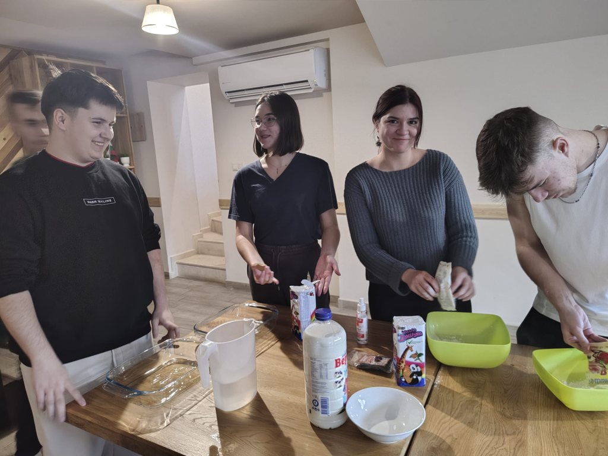
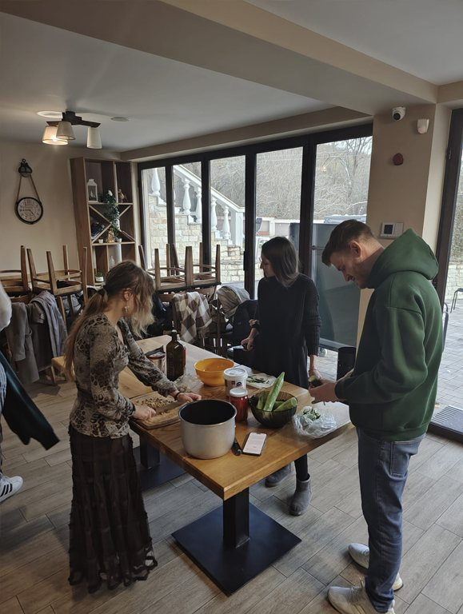
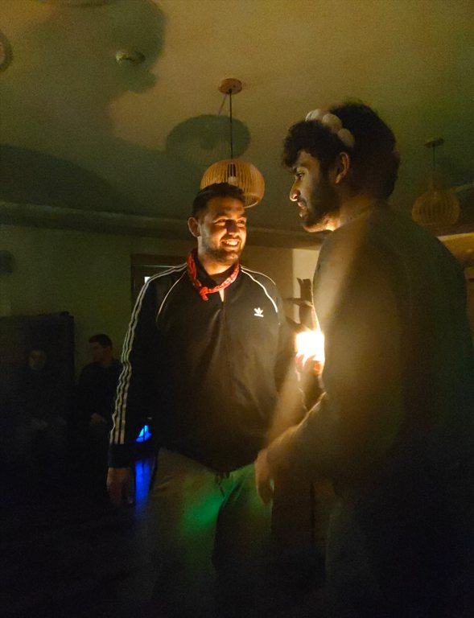

„Let us Cook!“ беше младежки обмен, проведен в Стара Загора, България, между 12 и 20 януари 2026 г., който събра млади хора от България, Румъния, Полша и Гърция за вдъхновяващо междукултурно пътешествие, основано на кухнята, неформалното образование и опознаването на културите.
Още от самото начало проектът изгради здрава основа чрез игри за разчупване на леда, игри с имена, дейности за изграждане на екип и упражнения за доверие, които помогнаха на участниците да се опознаят и да се подготвят за предстоящите дни. С напредването на обмена младите хора работиха в смесени международни екипи, планираха заедно уъркшопи, подготвяха рецепти и списъци за пазаруване и откриваха как храната отразява идентичността, традициите и общите европейски ценности.

Всяка национална група води свой кулинарен уъркшоп, в който участниците приготвяха и опитваха голямо разнообразие от традиционни ястия като гръцка мусака и дзадзики, полски пироги и запиеканки, българска баница и шопска салата и румънска мамалига, мичи и папанаши. Редуващите се кулинарни станции позволиха на всеки да участва активно, да научи нови техники и да допринесе за всяка част от процеса.
Освен кулинарните дейности проектът включваше и дебатен клуб по теми като глобализацията срещу традицията, ролята на храната за съхраняването на културата и начина, по който кухнята оформя идентичността в един променящ се свят. Участниците взеха участие и в креативен уъркшоп с политическа симулация и законодателен театър, свързан с ресторантьорството, в който изследваха вземането на решения, отговорността и различните гледни точки чрез ролеви игри.
Специален акцент на обмена беше денят за опознаване на Пловдив, в който участниците откриха богатата история и мултикултурните влияния на града, размишлявайки върху връзката между историята, съжителството и кулинарното многообразие.


Вечерите бяха изпълнени с културни презентации, традиционни игри, музика, танци и споделени вечери, които създадоха смислено пространство за обмен, приятелство и празнуване. В последния ден участниците направиха рефлексия върху пътя си на учене чрез формални и неформални дейности за оценка, включително креативна оценка „правене на пица“, и допринесоха за създаването на Готварската книга на проекта – издание, замислено едновременно като сборник с рецепти и като ръководство за използване на готвенето като инструмент в междукултурното учене и младежката работа. Проектът завърши с емоционални моменти на раздяла, включително церемонията Youthpass, церемония „Оскари“, прощални игри и сърдечна заключителна вечер.